I was drawn to American business cursive because of the simplicity and speed of writing, so I can use it for note taking and everyday writing.
However, some of the uppercase cursive form is not easily recognizable. Although when the words are written, the lowercase letters that follow usually provide enough context to make sense of the leading capital letter. Still, some people are not familiar with traditional cursive form, and I want my writing to be as legible as possible.
Below I have both Champion's and Palmer's form laid out side by side, and my comment as to which one I picked to practice and emulate.
For some letters, both Champion's and Palmer's are not desirable as far as legibility is concerned, so I use an alternative form instead.
| Champion | Palmer | Alternative | Comment | |
| A | | I like the closed top of Palmer's | ||
| B | 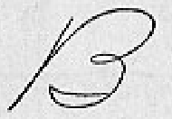 | Prefer Palmer's less flourished B. Takes up less space | ||
| C | 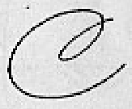 | Palmer's C has more slant, looks better when connected | ||
| D | 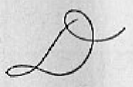 | Again, Palmer's top looks nicer | ||
| E | 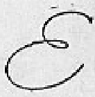 | Looks identical | ||
| F | 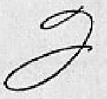 | Palmer's F is hard to read, I use champion's form but with less flourish. The downside is that I have to lift the pen one more time, but it's capital letter that you don't write as frequently | ||
| G | 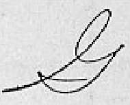 | |||
| H | 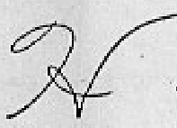 | |||
| I | 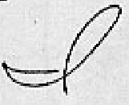 | Both I's are too easily mistaken for lowercase l or d, so I use an alternative uppercase cursive I | ||
| J | 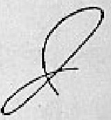 | |||
| K | 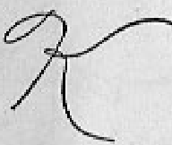 | |||
| L | 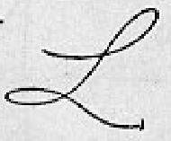 | |||
| M | 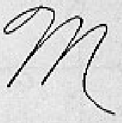 | |||
| N | 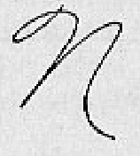 | |||
| O | 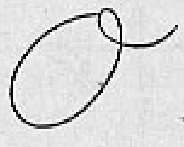 | |||
| P | 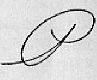 | Palmer's P looks nicer but the flourish reduces legibility, so I removed it | ||
| Q | 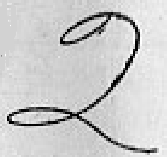 | Both Q are not legible, looks like the number 2. A simple looped Q is better IMO | ||
| R | 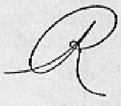 | Same comment as P | ||
| S | 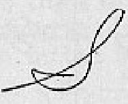 | |||
| T | 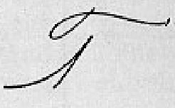 | Again, the extra flourish makes the T less recognizable | ||
| U | 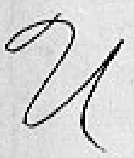 | |||
| V | 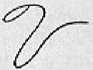 | |||
| W | 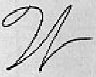 | |||
| X | 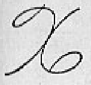 | |||
| Y | 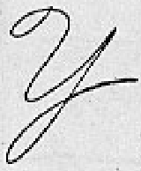 | |||
| Z | 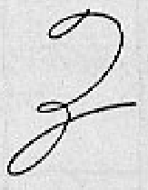 |